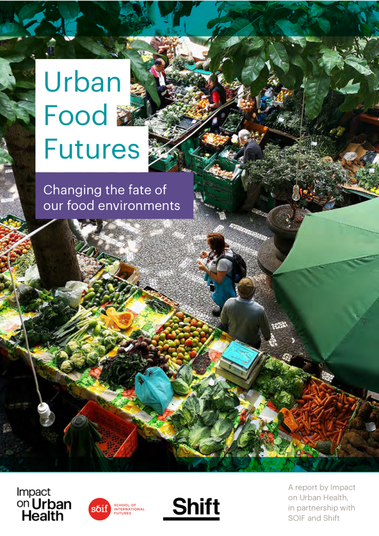

GSTC — Visualising an Equitable Urban Food Future

Context
In April 2020, Guy's and St Thomas' Charity commissioned SOIF and Shift to explore an uncomfortable question: what will the food environment in inner London actually look like by 2035, and who does that future serve? I joined as part of SOIF's foresight team on a project that ran from an inception meeting days into the UK's first COVID lockdown through to a published report a year later — spanning both institutional foresight and direct community research in Lambeth and Southwark.
Problem
Left on its current trajectory, the probable 2035 food future is starker, not more equal: lower-income families spend more of their income on food, are more exposed to system shocks, and have less access to affordable, nutritious food — while childhood obesity and the socioeconomic food divide both widen.
Process — Stage 1: Drivers
The project opened with desk research and a round of expert interviews across public health, urban planning, and the food industry, building a longlist of drivers of change in the food system. We narrowed that longlist collaboratively with GSTC and Shift in a first stakeholder workshop at the end of April 2020.
Process — Stage 2: Domains of change
From the driver longlist, I authored five "domains of change" — each a 2035 narrative vignette paired with a soft-systems diagram of the drivers behind it, workshopped with GSTC, Shift, and SOIF through May 2020:
- Climate Ready Foods — food systems rebuilt around sustainability; diets shift to local, seasonal, and alternative proteins as the livestock industry wanes.
- The Fragmenting Food Consumer — eating moves from three meals a day to constant, app-automated convenience, widening gaps in access to non-processed food.
- Changing Views of Inequality — in-work poverty and housing pressure pull against rising interest in UBI/UBS as competing forces shaping food poverty.
- Places Under Pressure — how residential and commercial space gets used, and by whom, is redefined as high streets and communal space are contested.
- New Business Purpose — mission-driven food business moves from a niche to a baseline expectation.
Process — Stage 3: Community & edge-participant immersion
In parallel, Shift Design led an immersion strand with residents of Lambeth and Southwark living on low incomes — recruiting "edge" participants and running research designed to ground the foresight work in lived experience rather than expert opinion alone.
Process — Stage 4: Implications workshop
In July 2020 we brought the domains and community research together in a stakeholder workshop to pressure-test their real-world implications. My own notes from facilitating one of the breakout sessions capture the texture of that conversation — proposals ranging from universal school meals to smaller, demonstrable pilots as a path to influencing policy from the bottom up.
Outcome
Families' own vision was clear throughout: healthy, affordable, convenient food as a right, not a luxury — paired with real skepticism that business and policy are committed to building it. The project translated this into a visualised "preferred future" for 2035 and a roadmap toward it, centering citizens and place over private-sector interest, published in the Urban Food Futures report in May 2021.